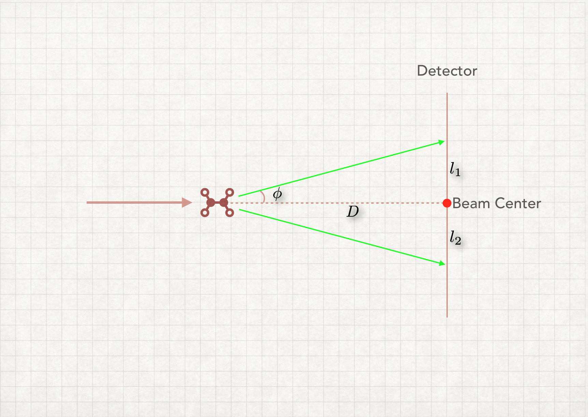
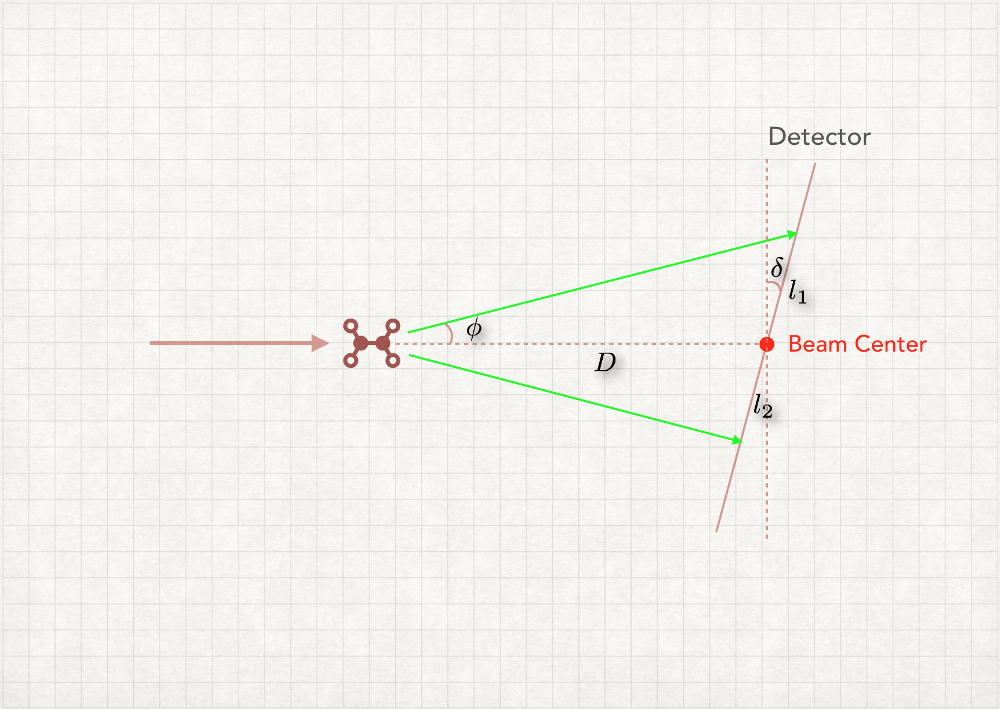

This module provides accurate calibration for monolithic detector, including beam center (center x and y), detector distance (z) and tilting angles (x and y tilting angle).

If the detector is perpendicular to the XFEL beam, the beam center is also the center of powder rings ($l_{1}\equiv l_{2}$), as shown in figure above.

But if the detector is not perpendicular, the powder rings are no longer circles, but ellipses. The centers of powder ellipses do not overlap.
For powder ellipse with scattering angle $\theta$ ($\phi = 2\theta$), detector with tilting angle $\delta$. We can get:
$$l_{1}=D\frac{\text{sin}\phi}{\text{cos}(\phi+\delta)}, \quad l_{2}=D\frac{\text{sin}\phi}{\text{cos}(\phi-\delta)}$$
The distance between the beam center and center of powder ellipse:
$$\Delta l = \frac{l_{1}-l_{2}}{2}$$
Using some approximation, we can finally get:
$$\Delta l = D\text{sin}\delta\cdot\text{tan}^{2}\phi$$
This means there is linear relationship between $\Delta l$ and $\text{tan}^{2}\phi$, so we can use a simple linear fitting algorithm to determine the tilting angle $\delta$.